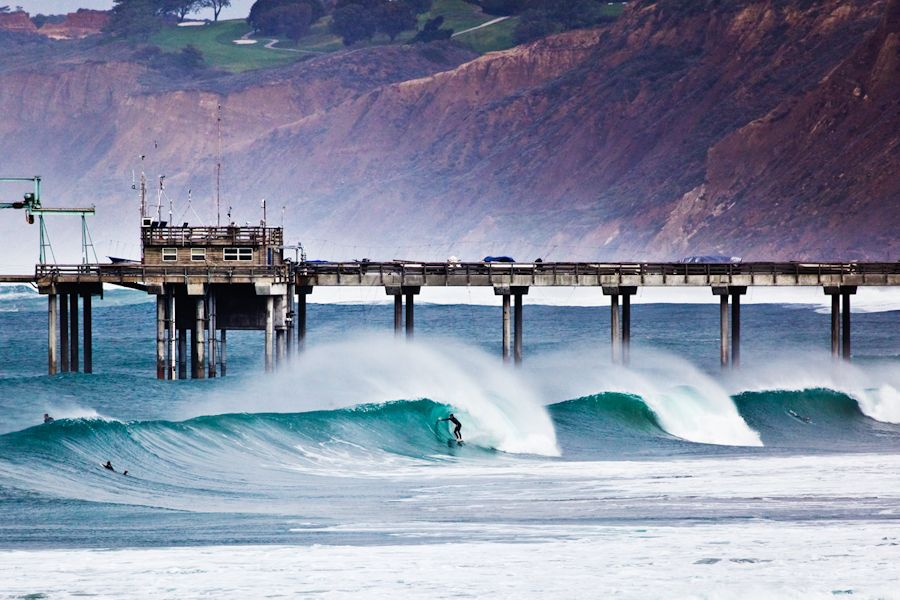

Tasty Scripps

Description:
Scripps is a mellow beachbreak located in La Jolla, California.
It typically breaks better on certain swells and tides.
Most of the year, it is an average wave.
However, occasionally the stars align and the wave turns on.
Ingredients:
- WNW swell direction
- Mid to short period (8-12 seconds)
- Low to mid tide
- Bonus: south wind
Steps:
- Wake up at 5am
- Don't be a little bitch
- Lay down the law and show the boys who's boss